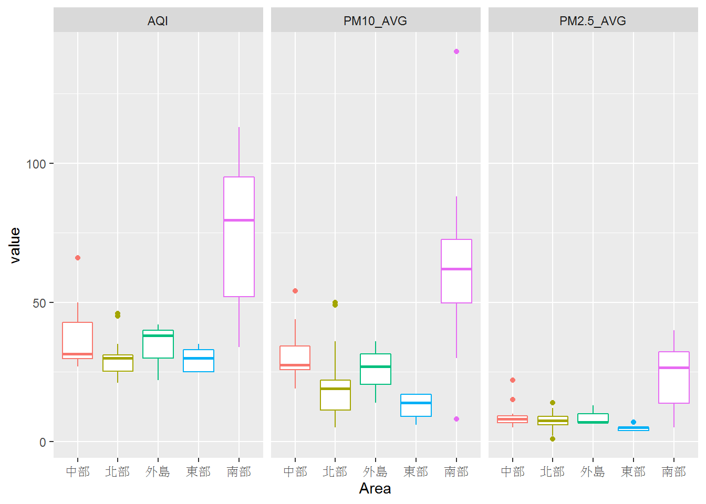

Chapter 5 各地區觀測站測得的PM10與PM2.5分布
5.1 並列的圖表
- 將多個相同類型的圖表並列
- 以下以各地區觀測站的PM10與PM2.5資料為例，在並列的圖表上畫出表示兩個指標分布的盒狀圖
5.2 取出各地區觀測站測得的PM10與PM2.5
aqi_data %>%
filter(!is.na(AQI)) %>%
select(Area, SiteName, PM10, PM2.5)## Area SiteName PM10 PM2.5
## 1 中部 二林 18 16
## 2 北部 三重 29 8
## 3 北部 三義 15 5
## 4 北部 土城 31 12
## 5 北部 士林 25 6
## 6 北部 大同 31 17
## 7 中部 大里 1 ND
## 8 北部 大園 NA 9
## 9 南部 大寮 19 10
## 10 南部 小港 28 2
## 11 北部 中山 26 9
## 12 北部 中壢 21 23
## 13 南部 仁武 22 5
## 14 南部 斗六 16 6
## 15 東部 冬山 22 8
## 16 北部 古亭 22 6
## 17 南部 左營 22 6
## 18 北部 平鎮 28 4
## 19 北部 永和 21 3
## 20 南部 安南 NA 17
## 21 南部 朴子 6 4
## 22 北部 汐止 23 8
## 23 中部 竹山 13 4
## 24 北部 竹東 22 3
## 25 中部 西屯 18 5
## 26 中部 沙鹿 15 ND
## 27 東部 宜蘭 14 8
## 28 中部 忠明 9 17
## 29 北部 松山 23 9
## 30 北部 板橋 23 7
## 31 北部 林口 NA 2
## 32 南部 林園 40 9
## 33 東部 花蓮 18 ND
## 34 外島 金門 21 8
## 35 南部 前金 22 ND
## 36 南部 前鎮 24 ND
## 37 中部 南投 9 ND
## 38 南部 屏東 21 ND
## 39 南部 恆春 39 7
## 40 南部 美濃 18 7
## 41 北部 苗栗 17 7
## 42 北部 苗栗(後龍) 31 10
## 43 中部 埔里 7 7
## 44 北部 桃園 26 8
## 45 北部 桃園(觀音工業區) 28 6
## 46 外島 馬公 NA 3
## 47 外島 馬祖 15 4
## 48 北部 基隆 18 7
## 49 南部 崙背 NA 3
## 50 北部 淡水 25 10
## 51 南部 麥寮 10 2
## 52 南部 善化 17 7
## 53 北部 富貴角 26 8
## 54 南部 復興 16 4
## 55 北部 湖口 23 9
## 56 北部 菜寮 30 6
## 57 北部 新竹 27 6
## 58 北部 新店 19 3
## 59 南部 新港 5 2
## 60 南部 新營 13 9
## 61 南部 楠梓 24 7
## 62 北部 萬里 21 7
## 63 北部 萬華 21 8
## 64 南部 嘉義 NA 5
## 65 中部 彰化 12 10
## 66 東部 臺東 17 8
## 67 南部 臺南 21 9
## 68 南部 臺南(麻豆) NA ND
## 69 南部 鳳山 23 5
## 70 南部 潮州 8 4
## 71 中部 線西 23 9
## 72 南部 橋頭 25 4
## 73 北部 頭份 22 6
## 74 北部 龍潭 24 6
## 75 中部 豐原 8 11
## 76 北部 觀音 28 95.3 從wide data format改為long data format
aqi_data %>%
filter(!is.na(AQI)) %>%
select(Area, SiteName, PM10, PM2.5) %>%
gather(key=index, value=value, PM10, PM2.5)## Area SiteName index value
## 1 中部 二林 PM10 18
## 2 北部 三重 PM10 29
## 3 北部 三義 PM10 15
## 4 北部 土城 PM10 31
## 5 北部 士林 PM10 25
## 6 北部 大同 PM10 31
## 7 中部 大里 PM10 1
## 8 北部 大園 PM10 <NA>
## 9 南部 大寮 PM10 19
## 10 南部 小港 PM10 28
## 11 北部 中山 PM10 26
## 12 北部 中壢 PM10 21
## 13 南部 仁武 PM10 22
## 14 南部 斗六 PM10 16
## 15 東部 冬山 PM10 22
## 16 北部 古亭 PM10 22
## 17 南部 左營 PM10 22
## 18 北部 平鎮 PM10 28
## 19 北部 永和 PM10 21
## 20 南部 安南 PM10 <NA>
## 21 南部 朴子 PM10 6
## 22 北部 汐止 PM10 23
## 23 中部 竹山 PM10 13
## 24 北部 竹東 PM10 22
## 25 中部 西屯 PM10 18
## 26 中部 沙鹿 PM10 15
## 27 東部 宜蘭 PM10 14
## 28 中部 忠明 PM10 9
## 29 北部 松山 PM10 23
## 30 北部 板橋 PM10 23
## 31 北部 林口 PM10 <NA>
## 32 南部 林園 PM10 40
## 33 東部 花蓮 PM10 18
## 34 外島 金門 PM10 21
## 35 南部 前金 PM10 22
## 36 南部 前鎮 PM10 24
## 37 中部 南投 PM10 9
## 38 南部 屏東 PM10 21
## 39 南部 恆春 PM10 39
## 40 南部 美濃 PM10 18
## 41 北部 苗栗 PM10 17
## 42 北部 苗栗(後龍) PM10 31
## 43 中部 埔里 PM10 7
## 44 北部 桃園 PM10 26
## 45 北部 桃園(觀音工業區) PM10 28
## 46 外島 馬公 PM10 <NA>
## 47 外島 馬祖 PM10 15
## 48 北部 基隆 PM10 18
## 49 南部 崙背 PM10 <NA>
## 50 北部 淡水 PM10 25
## 51 南部 麥寮 PM10 10
## 52 南部 善化 PM10 17
## 53 北部 富貴角 PM10 26
## 54 南部 復興 PM10 16
## 55 北部 湖口 PM10 23
## 56 北部 菜寮 PM10 30
## 57 北部 新竹 PM10 27
## 58 北部 新店 PM10 19
## 59 南部 新港 PM10 5
## 60 南部 新營 PM10 13
## 61 南部 楠梓 PM10 24
## 62 北部 萬里 PM10 21
## 63 北部 萬華 PM10 21
## 64 南部 嘉義 PM10 <NA>
## 65 中部 彰化 PM10 12
## 66 東部 臺東 PM10 17
## 67 南部 臺南 PM10 21
## 68 南部 臺南(麻豆) PM10 <NA>
## 69 南部 鳳山 PM10 23
## 70 南部 潮州 PM10 8
## 71 中部 線西 PM10 23
## 72 南部 橋頭 PM10 25
## 73 北部 頭份 PM10 22
## 74 北部 龍潭 PM10 24
## 75 中部 豐原 PM10 8
## 76 北部 觀音 PM10 28
## 77 中部 二林 PM2.5 16
## 78 北部 三重 PM2.5 8
## 79 北部 三義 PM2.5 5
## 80 北部 土城 PM2.5 12
## 81 北部 士林 PM2.5 6
## 82 北部 大同 PM2.5 17
## 83 中部 大里 PM2.5 ND
## 84 北部 大園 PM2.5 9
## 85 南部 大寮 PM2.5 10
## 86 南部 小港 PM2.5 2
## 87 北部 中山 PM2.5 9
## 88 北部 中壢 PM2.5 23
## 89 南部 仁武 PM2.5 5
## 90 南部 斗六 PM2.5 6
## 91 東部 冬山 PM2.5 8
## 92 北部 古亭 PM2.5 6
## 93 南部 左營 PM2.5 6
## 94 北部 平鎮 PM2.5 4
## 95 北部 永和 PM2.5 3
## 96 南部 安南 PM2.5 17
## 97 南部 朴子 PM2.5 4
## 98 北部 汐止 PM2.5 8
## 99 中部 竹山 PM2.5 4
## 100 北部 竹東 PM2.5 3
## 101 中部 西屯 PM2.5 5
## 102 中部 沙鹿 PM2.5 ND
## 103 東部 宜蘭 PM2.5 8
## 104 中部 忠明 PM2.5 17
## 105 北部 松山 PM2.5 9
## 106 北部 板橋 PM2.5 7
## 107 北部 林口 PM2.5 2
## 108 南部 林園 PM2.5 9
## 109 東部 花蓮 PM2.5 ND
## 110 外島 金門 PM2.5 8
## 111 南部 前金 PM2.5 ND
## 112 南部 前鎮 PM2.5 ND
## 113 中部 南投 PM2.5 ND
## 114 南部 屏東 PM2.5 ND
## 115 南部 恆春 PM2.5 7
## 116 南部 美濃 PM2.5 7
## 117 北部 苗栗 PM2.5 7
## 118 北部 苗栗(後龍) PM2.5 10
## 119 中部 埔里 PM2.5 7
## 120 北部 桃園 PM2.5 8
## 121 北部 桃園(觀音工業區) PM2.5 6
## 122 外島 馬公 PM2.5 3
## 123 外島 馬祖 PM2.5 4
## 124 北部 基隆 PM2.5 7
## 125 南部 崙背 PM2.5 3
## 126 北部 淡水 PM2.5 10
## 127 南部 麥寮 PM2.5 2
## 128 南部 善化 PM2.5 7
## 129 北部 富貴角 PM2.5 8
## 130 南部 復興 PM2.5 4
## 131 北部 湖口 PM2.5 9
## 132 北部 菜寮 PM2.5 6
## 133 北部 新竹 PM2.5 6
## 134 北部 新店 PM2.5 3
## 135 南部 新港 PM2.5 2
## 136 南部 新營 PM2.5 9
## 137 南部 楠梓 PM2.5 7
## 138 北部 萬里 PM2.5 7
## 139 北部 萬華 PM2.5 8
## 140 南部 嘉義 PM2.5 5
## 141 中部 彰化 PM2.5 10
## 142 東部 臺東 PM2.5 8
## 143 南部 臺南 PM2.5 9
## 144 南部 臺南(麻豆) PM2.5 ND
## 145 南部 鳳山 PM2.5 5
## 146 南部 潮州 PM2.5 4
## 147 中部 線西 PM2.5 9
## 148 南部 橋頭 PM2.5 4
## 149 北部 頭份 PM2.5 6
## 150 北部 龍潭 PM2.5 6
## 151 中部 豐原 PM2.5 11
## 152 北部 觀音 PM2.5 95.4 利用圖表層面將各地區觀測站測得的PM10與PM2.5分布畫在並列的圖表上
- 盒狀圖類似上面的做法，但利用facet_wrap(~index)，將兩種指標的盒狀圖並列
aqi_data %>%
filter(!is.na(AQI)) %>%
select(Area, SiteName, PM10, PM2.5) %>%
gather(key=index, value=value, PM10, PM2.5) %>%
ggplot(aes(x=Area, y=value, color=Area)) +
geom_jitter() +
facet_wrap(~index)
5.5 取消圖例
aqi_data %>%
filter(!is.na(AQI)) %>%
select(Area, SiteName, PM10, PM2.5) %>%
gather(key=index, value=value, PM10, PM2.5) %>%
ggplot(aes(x=Area, y=value, color=Area)) +
geom_jitter() +
facet_wrap(~index) +
theme(legend.position="none")
5.6 練習
- 將X軸與Y軸的標題改為中文，並加上圖表標題

5.7 練習
- 利用scale_color_brewer()修改圖形顏色

5.8 簡要複習
- 比較資料分布可利用點狀圖、盒狀圖和小提琴圖，三種圖形各有擅長表現的訊息。
- 點狀圖藉由點的密度表現資料分布情形，也能夠比較不同種類資料的數量，但無法表現重要的統計訊息，如中位數等。
- 盒狀圖節由關鍵位置的視覺圖示(如盒子的上下緣和中間的橫線等)表現出資料分布的重要統計訊息，但缺乏較細緻的資料分布情形，並且無法比較不同種類資料的數量。
- 小提琴圖由圖形寬度變化表現資料分布情形，可以大致看出資料的集中與分散，但無法表現重要的統計訊息，也無法比較不同種類資料的數量。
- facet_wrap可以產生並列的圖形，但需要注意座標是否需要綁定。
- 圖形的外觀可由theme()進行設定。